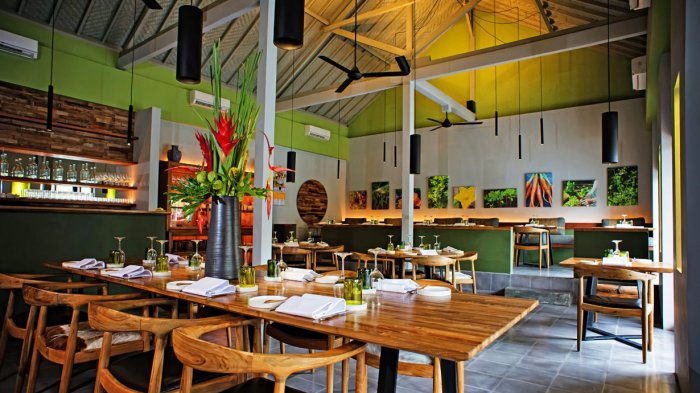

Selamat Datang di Resto BSI
Restoran yang memiliki menu makanan yang lezat dan tentunya dengan harga merakyat. Langsung saja pilih makanan dengan mengklik tombol dibawah

Ringkasan Web Restoran
Ketika mengunjungi website restoran, presentasi adalah segalanya, seperti dengan hidangan tanda tangan. Situs yang menarik tidak hanya bisa memotret piring ke tingkat berikutnya, namun juga dapat membantu menarik lebih banyak pelanggan. Bagaimanapun, restoran yang memberi banyak perhatian ke situs web, lebih dari sekadar menaruh banyak perhatian ke dalam proses persiapan makan mereka.